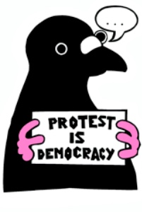
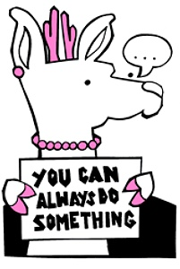
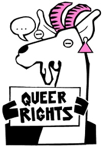

Welcome. We are KNONK, a Bristol-based creative collective.
This website was created to hold some of the things we make and thoughts we write. We get together for different events, including zine making, a book club and Lucky Dip DVD night.
Rat, our webmaster, fails to update every week but we still appreciate his work.
You can follow us on Neocities: KNONK
Anti-Authoritarian Action Corner

Open AI, owner of ChatGPT, is now besties with Trump and providing technology to the American ICE. Boycotts are picking up steam.
Cancel your membership, stop using the free version, stop feeding this hell machine. Link below has more information on why a boycott can work, and what alternatives are available.
QuitGPT.org
KNONK members

Goat
Goat is a community organiser and queer rights activist with years of experience. Read his book and film reviews.
Deer
Our darling deer is a painter, a writer, and our resident agony aunt.
Badger
Our spooky non-binary witchy friend, who makes zines with us and brings the best home-made dips.
Fox
Our youngest member is an enthusiastic crafter, writer and collage artist.Printable zines
Mini zine you can print and assemble yourself.
2026-01: Month Review (pdf) A mini zine to help you review your month and make plans for the next one.
Movies 2025
Pigeon wrote up a detailed review of 2025 in terms of the films he watched, loved, hated. Check it out.

